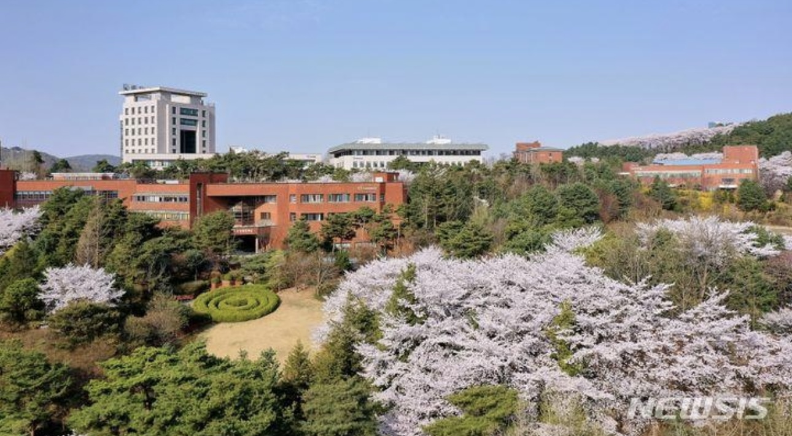

내가 이 장소를 추천하는 이유
하늘동산은 공부하다가 잠시 휴식을 취하거나 캠퍼스의 분위기를 느끼기에 좋은 장소라고 생각합니다.
위치
가톨릭대학교 성심교정 캠퍼스 안에 있는 공간입니다.
추천 활동
- 산책하면서 휴식하기
- 친구와 이야기하기
- 캠퍼스 풍경 감상하기
사진

사진 출처: 웹에서 참고한 이미지
지도
아래 링크를 클릭하면 지도에서 가톨릭대학교의 위치를 확인할 수 있습니다.
네이버 지도에서 위치 보기캠퍼스에서 잠시 쉬면서 여유를 느낄 수 있는 공간입니다.
하늘동산은 공부하다가 잠시 휴식을 취하거나 캠퍼스의 분위기를 느끼기에 좋은 장소라고 생각합니다.
가톨릭대학교 성심교정 캠퍼스 안에 있는 공간입니다.

사진 출처: 웹에서 참고한 이미지
아래 링크를 클릭하면 지도에서 가톨릭대학교의 위치를 확인할 수 있습니다.
네이버 지도에서 위치 보기